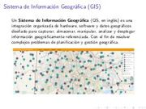
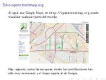
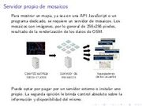

OpenStreetMap
Presentación sobre OpenStreetMap, la Wikipedia de los mapas.
  
El pasado 14 de diciembre de 2013 expuse en el Grupo de Usuarios de GNU/Linux de la Laguna el tema OpenStreetMap. De éste material extraigo estos apuntes:
Generalidades de GIS
- Se denomina Información Geográfica a aquellos datos georreferenciados involucrados como parte de un sistema para operaciones administrativas, científicas o legales.
- Un Sistema de Información Geográfica (GIS en inglés) es una integración organizada de hardware, software y datos geográficos diseñado para capturar, almacenar, manipular, analizar y desplegar información geográficamente referenciada. Con el fin de resolver complejos problemas de planificación y gestión geográfica.
- Es notable que al pensar en mapas lo primero que se nos ocurra sea Google Maps. La empresa ha realizado en excelente trabajo y un gran negocio al ofrecer mapas en la internet. Aunque para el usuario común no le cuesta usar estos servicios, pierden sus derechos al ceder todas sus contribuciones a Google.
- Lamentablemente para la mayoría de los países la información geográfica pública NO es de libre uso. El ciudadano viene pagando dos veces por ésta, la primera vía los impuestos para generarla y luego, por segunda vez, para obtenerla. Al mismo tiempo, puede estar sujeta a licencias que limitan su forma de uso.
Las virtudes de OpenStreetMap (OSM)
- Conocimiento local: Enfatiza el conocimiento local. Los colaboradores utilizan imágenes aéreas, dispositivos GPS y mapas de campo de baja tecnología para verificar que OSM sea preciso y esté actualizado.
- Impulsado por la comunidad: La comunidad de OSM es diversa, apasionada y crece cada día. Los colaboradores incluyen a mapeadores entusiastas, profesionales de GIS, ingenieros que ejecutan los servidores de OSM, mapeadores humanitarios de zonas afectadas por desastres y muchos más.
- Datos abiertos: OSM es open data: usted es libre de utilizarlo para cualquier propósito, siempre y cuando se le dé crédito a OSM y sus colaboradores. Si altera o construye sobre los datos de ciertas maneras, deberá distribuir el resultado sólo bajo la misma licencia.
Las herramientas para usar OSM
- En el navegador de internet ingrese a OpenStreetMap, haga una cuenta y edite el mapa.
- Descargue el editor de mapas en Java JOSM.
- Entre los muchos programas especializados destaca QGIS que es multiplataforma.
Alcance de un sistema GIS
- Disponer con certeza y rapidez de la información y las ubicaciones de los puntos de interés. Esto significa hacer búsquedas y obtener mapas inmediatos de escuelas, negocios, zonas de riesgo, etc. desde PC, laptop, tablet o celular.
- Ahorro de costos e independencia de proveedores externos. Al implementar un servidor de mosaicos propio, se ahorrarán costos de proveedores externos, en especial.
- Aprovechar las tecnologías de los teléfonos inteligentes con GPS. Por medio de programas libres se podrán registrar la ruta y los datos georreferenciados de los recorridos usando hardware económico.
- Publicación de mapas en los sitios web con información para el ciudadano.